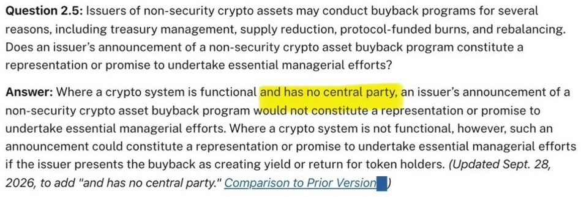
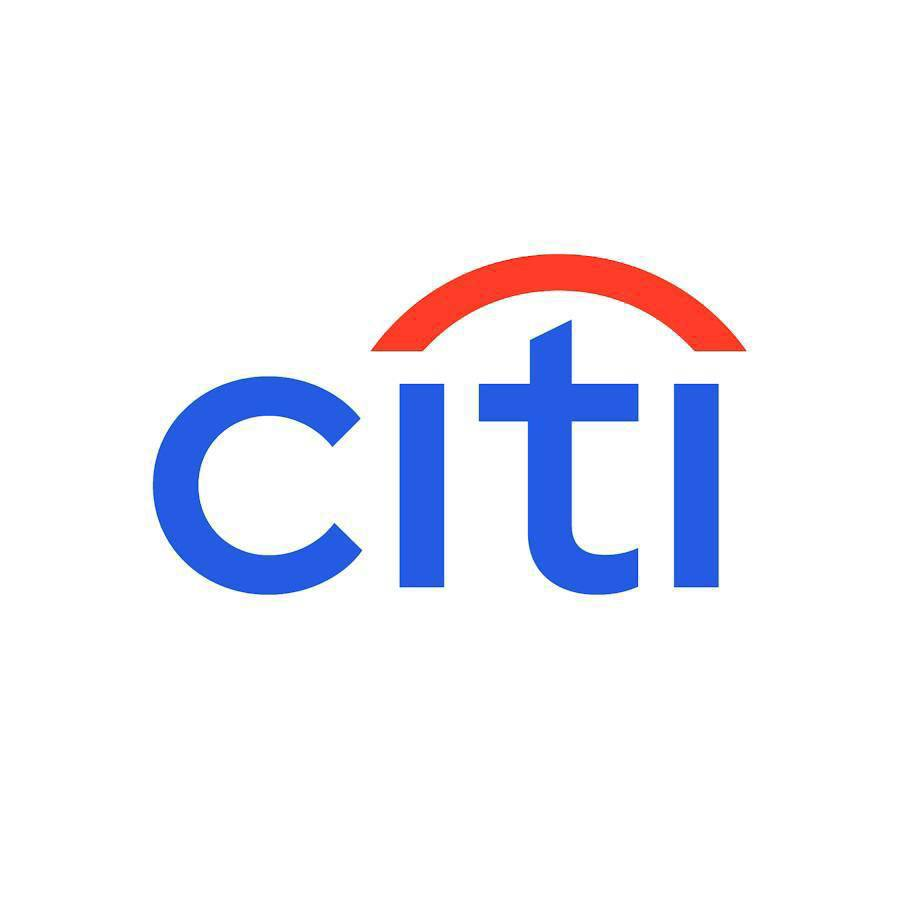
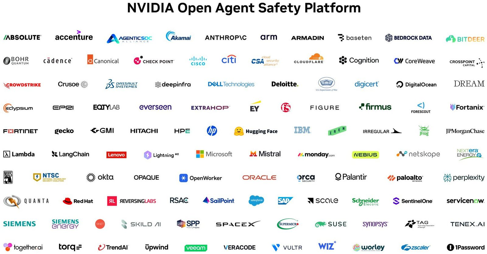
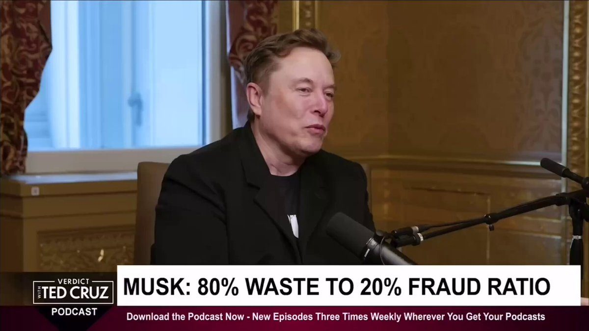
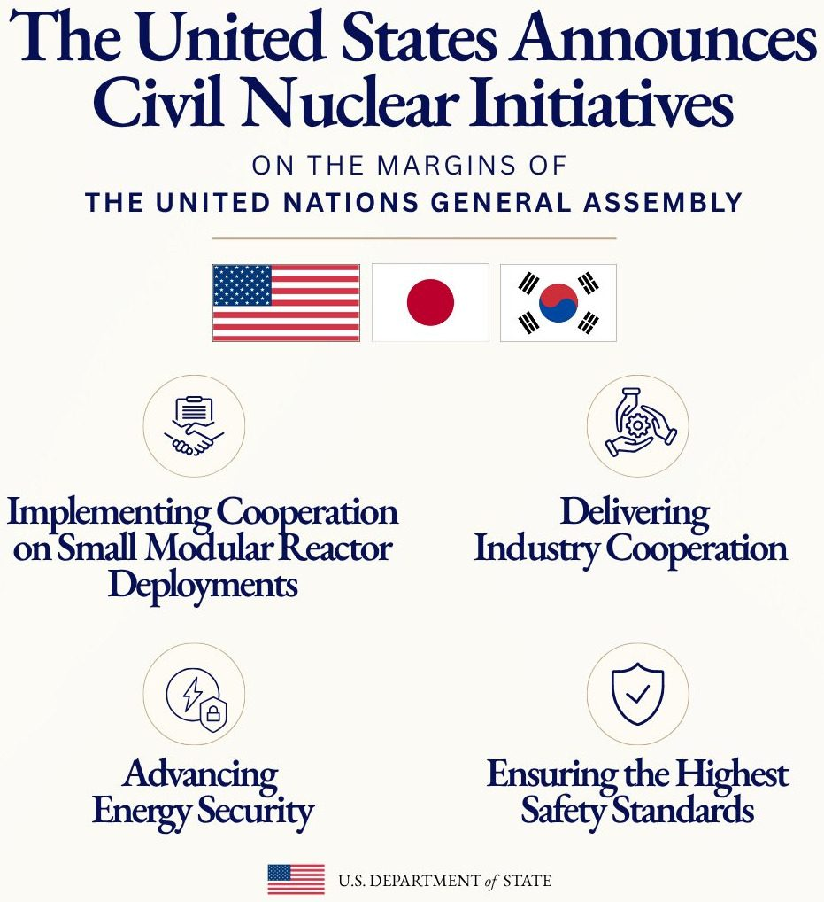

🚨 JUST IN: The CFTC approved Coinbase Clearing LLC as a derivatives clearinghouse, enabling Coinbase to settle fully collateralized contracts using USDC and 24/7 settlement.
🚨NEW: The @SECGov just updated its crypto FAQ on token buybacks to add a stipulation that if there is no central party behind those token buybacks, then this arrangement likely does not constitute an investment contract.
It comes following comments from @a16zcrypto General Counsel and Head of Policy @milesjennings last week that the prior wording could “empower an issuer to announce the buyback program without that announcement then creating an investment contract.”

We're bringing stablecoins into the banking system with @Citi.
That means instant stablecoin acceptance for institutions - all on bank-grade, regulated infrastructure.
The next step for stablecoins becoming everyday money.
🔥 JUST IN: Citigroup partners with Coinbase to bring stablecoin payments to institutional clients.

Today, with over 100 industry partners, we introduced the NVIDIA Open Agent Safety Platform, bringing together OpenShell and Sentry.
Artificial intelligence is extraordinary technology that will advance discovery, productivity, security, health, and prosperity for generations to come.
But its full promise can only be realized when people have confidence that AI is being built to be safe and deployed with wisdom and responsibility.
This is bigger than a single product. It's the beginning of an open ecosystem to build the trust layer for safe agent systems.
Together, we are building the foundation of the AI economy.
Trust and innovation are not in conflict. Safety is how trust is earned. We must build not only the most capable AI, but the most trusted AI, so that this extraordinary technology can realize its enormous promise for the world.

This is fake news at its finest.
First off, we’re not ‘banning’ any program. The federal government doesn’t set curriculum or programs.
Here’s the truth: we are holding colleges accountable for leaving students worse off than if they never enrolled. Too many graduates report delaying major life milestones like buying a home or starting a family. Why? Because low return-on-investment programs saddled them with unmanageable debt that was never going to translate into a real-world job.
Federal student loans are not a welfare program for failing college programs. American students deserve education and training pathways that prepare them for the workforce – and transparency about programs that will never pay off.
Trump is banning students majoring in degrees that don’t make enough money from taking out college loans. Degrees for social work, art, religious studies, teaching aides, and music will be hit the hardest.
U.S. Department of Education Formally Rescinds the Biden Administration’s Illegal Title IX Rewrite, Reinstating the 2020 Regulation
RAV IS "STEPPING INTO CNN'S POSITION. THANK YOU TO THE WHITE HOUSE!"
"Seeing X BLOW UP, telling everybody how great RAV's coverage has been this week. Thank you to the WH for the opportunity and TRUSTING us to cover @POTUS."
@taymitchell_tv
Operation Economic Outcast has caused the rial to hit record lows. We will continue to degrade the Iranian regime’s ability to fund terrorism and develop a nuclear weapon.
FOSTERING THE FUTURE TOGETHER New Private-Sector Technology Partnerships
When I established Fostering the Future Together, the mission was clear: empower children through technology & education.
Achieving that mission requires collaboration between the leading innovators and global leaders, especially as technologies like artificial intelligence transform education.
At last week’s 81st United Nations General Assembly session, Adobe, Amazon, Intel, Starlink, Google, and Zoom, all committed to provide funding, expertise, and technology to support Fostering the Future Together’s mission.
I deeply value the commitment of these technology companies and welcome them to the Fostering the Future Together movement as we scale across continents.
🚨🚨ELON: "One of the biggest fraud holes we've uncovered ... is that the government can give money to a so called nonprofit ... They then give themselves ... insane salaries, expense everything, buy jets and homes ... on the taxpayer dime ... This is happening at scale."

▶ Watch on XThe United States is pleased to announce the establishment of an Implementation Plan in support of the Memorandum of Cooperation on Small Modular Reactor Deployments in Other Countries that the three Participants signed in Ankara on July 7 of this year.
Read more:

Today, Ambassador Greer issued a statement following the announcement of recommendations by the U.S.-China Board of Trade to facilitate balanced, non-sensitive trade between the two largest economies in the world.
U.S.-China Board of Trade
Sun and Moon may help trigger earthquakes, groundbreaking study finds
Trump to Unveil Planned $15 Billion Iowa Steel Project